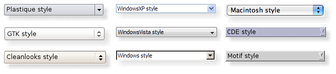

| Home · All Classes · Modules · QSS HELP · QSS 案例 · VER007 HOME |
该的QStyle类是封装了图形用户界面的外观和感觉的抽象基类。More...
继承QObject。
通过继承QCommonStyle。
该的QStyle类是封装了图形用户界面的外观和感觉的抽象基类。
Qt的包含一组的QStyle子类，模拟的Qt所支持的不同平台的风格（QWindowsStyle，QMacStyle，QMotifStyle等）。默认情况下，这些样式都内置在QtGui库。样式也可制成可作为插件。
Qt的内建窗体使用的QStyle来执行几乎所有的图纸，确保它们看起来确实很像相当于原生窗口部件。下图显示了一个QComboBox在八个不同的风格。

主题：
整个应用程序的样式可使用设置QApplication.setStyle（）函数。它也可以由应用程序的用户指定的，使用-style命令行选项：
./myapplication -style motif
如果没有指定样式， Qt会选择最合适的风格，为用户的平台或桌面环境。
对单个部件使用的样式，也可以设置在QWidget.setStyle（）函数。
如果您正在开发自定义的小部件，并要他们好看在所有平台上，你可以使用的QStyle函数来执行部件的部件图纸，如drawItemText（ ）drawItemPixmap（ ）drawPrimitive（ ）drawControl（）和drawComplexControl（ ） 。
大多数的QStyle绘制函数需要四个参数：
例如，如果你想画一个焦点矩形上的小部件，你可以这样写：
void MyWidget.paintEvent(QPaintEvent * /* event */) { QPainter painter(this); QStyleOptionFocusRect option; option.initFrom(this); option.backgroundColor = palette().color(QPalette.Background); style()->drawPrimitive(QStyle.PE_FrameFocusRect, &option, &painter, this); }
的QStyle得到所有它需要从渲染的图形元素的信息QStyleOption。窗口小部件是通过作为在壳体的最后一个参数的样式需要它来执行特殊效果（例如Mac OS X上的动画默认的按钮），但它不是必需的。事实上，你可以使用的QStyle绘制在任何绘图设备，不只是小部件，通过设置QPainter正常。
QStyleOption具有各种子类的各种类型的图形元素可以被绘制。例如，PE_FrameFocusRect预计QStyleOptionFocusRect的说法。
以确保绘图操作是尽可能快地，QStyleOption和它的子类有公共数据成员。请参阅QStyleOption类文档，了解有关如何使用它的详细信息。
为方便起见， Qt提供了QStylePainter类，它结合了的QStyle ，一QPainter和QWidget。这使得它可以写
QStylePainter painter(this);
...
painter.drawPrimitive(QStyle.PE_FrameFocusRect, option);
而不是
QPainter painter(this);
...
style()->drawPrimitive(QStyle.PE_FrameFocusRect, &option, &painter, this);
您可以创建自定义的外观，并通过创建一个自定义样式感觉为您的应用。有两种方法可以创建一个自定义样式。在静态方法中，您既可以选择一个现有的QStyle类，继承它，并重新实现虚函数提供自定义行为，或者你从头创建一个完整的QStyle类。在动态的方法，你修改你的系统风格在运行时的行为。下方的静电的方法进行说明。动态方法的描述QProxyStyle。
在静态方法的第一步是挑选而提供的Qt从中你将建立您的自定义样式的样式之一。您选择的QStyle类将取决于其风格酷似你想要的风格最。你可以作为一个基地使用最普遍的类是QCommonStyle（不是的QStyle ） 。这是因为Qt的要求它的风格是QCommonStyle秒。
这取决于你想改变的基本样式的哪些部分，你必须重新实现用来绘制界面的部分功能。为了说明这一点，我们将通过修改绘制的旋转框箭头的外观QWindowsStyle。箭在primitive elements由该画drawPrimitive（ ）函数，所以我们需要重新实现该功能。我们需要下面的类声明：
class CustomStyle : public QWindowsStyle { Q_OBJECT public: CustomStyle() ~CustomStyle() {} void drawPrimitive(PrimitiveElement element, const QStyleOption *option, QPainter *painter, const QWidget *widget) const; };
要绘制它的向上和向下箭头，QSpinBox使用PE_IndicatorSpinUp和PE_IndicatorSpinDown基本元素。以下是如何重新实现drawPrimitive（ ）函数以不同的方式吸引他们：
void CustomStyle.drawPrimitive(PrimitiveElement element, const QStyleOption *option, QPainter *painter, const QWidget *widget) const { if (element == PE_IndicatorSpinUp || element == PE_IndicatorSpinDown) { QPolygon points(3); int x = option->rect.x(); int y = option->rect.y(); int w = option->rect.width() / 2; int h = option->rect.height() / 2; x += (option->rect.width() - w) / 2; y += (option->rect.height() - h) / 2; if (element == PE_IndicatorSpinUp) { points[0] = QPoint(x, y + h); points[1] = QPoint(x + w, y + h); points[2] = QPoint(x + w / 2, y); } else { // PE_SpinBoxDown points[0] = QPoint(x, y); points[1] = QPoint(x + w, y); points[2] = QPoint(x + w / 2, y + h); } if (option->state & State_Enabled) { painter->setPen(option->palette.mid().color()); painter->setBrush(option->palette.buttonText()); } else { painter->setPen(option->palette.buttonText().color()); painter->setBrush(option->palette.mid()); } painter->drawPolygon(points); } else { QWindowsStyle.drawPrimitive(element, option, painter, widget); } }
请注意，我们不使用widget的说法，除了它传递给QWindowStyle.drawPrimitive （ ）函数。如前所述，关于什么是要绘制的信息和应该如何被绘制由指定QStyleOption对象，所以没有必要问窗口小部件。
如果你需要使用widget参数以获得更多的信息，请小心，以确保它不为0 ，并且它是正确类型的使用它。例如：
QSpinBox *spinBox = qobject_cast<QSpinBox *>(widget);
if (spinBox) {
...
}
在实现自定义风格，你不能假设的部件是一个QSpinBox只是因为枚举值称为PE_IndicatorSpinUp or PE_IndicatorSpinDown。
该文档为Styles例如涵盖更详细这个话题。
Warning:目前不支持Qt的样式表定制的QStyle子类。我们计划在未来的版本解决这个问题。
有在Qt的应用程序中使用自定义样式的几种方法。最简单的方法是将自定义样式传递给QApplication.setStyle（ ）之前创建静态函数QApplication对象：
#include <QtGui> #include "customstyle.h" int main(int argc, char *argv[]) { QApplication.setStyle(new CustomStyle); QApplication app(argc, argv); QSpinBox spinBox; spinBox.show(); return app.exec(); }
您可以致电QApplication.setStyle（ ）在任何时间，而是由构造函数之前调用它，可以确保用户的喜好，使用设置-style命令行选项，被尊重。
您可能想使你的自定义样式可用于其他应用程序，这可能不是你的，因此不适用于你重新编译使用。 Qt的插件系统，使得它可以创建样式的插件。创建为插件样式加载在运行时共享对象由Qt本身。请参阅Qt Plugin文档以获取有关如何去创造一个风格插件的更多信息。
编译你的插件，并把它放到Qt的plugins/styles目录。我们现在有一个可插拔的风格， Qt可以自动加载。使用新的风格与现有的应用程序，只需启动该应用程序具有以下参数：
./myapplication -style custom
该应用程序将使用的外观和你实现的自定义样式感觉。
由右至左（如阿拉伯语和希伯来语）的书面语言通常也反映部件的整体布局，并要求光来自于屏幕的右上角，而不是左上角。
如果您创建自定义样式，你应该绘制对称元素时，确保他们也期待正确的镜像布局要特别小心。一个简单的方法来测试你的风格是运行的应用程序-reverse命令行选项或致电QApplication.setLayoutDirection（ ）在你的main()功能。
这里有一些事情在一个从右到左的环境使得一个良好的工作作风时要牢记：
项目的意见，这幅画是由委讬进行的。 Qt的默认的委讬，QStyledItemDelegate，也可用于为计算项的边界矩形，并且其子元素的各种项目类data roles QStyledItemDelegate支持。请参阅QStyledItemDelegate类的描述，以找出哪些数据类型和角色的支持。你可以阅读更多有关项目数据的角色Model/View Programming。
When QStyledItemDelegate描绘它的项目，它吸引CE_ItemViewItem，并计算其大小与CT_ItemViewItem。还需要注意的是，它使用SE_ItemViewItemText设置编辑器的大小。当实现一个风格来定制的项目视图绘制，你需要检查的实施QCommonStyle（以及任何其他子类从它自己的风格继承） 。这样，你找出哪些以及如何等风格元素都画，然后就可以重新实现元素的绘画，应该可以得出不同。
我们有一个小例子，我们自定义的项目背景的绘制。
switch (element) {
case (PE_PanelItemViewItem): {
painter->save();
QPoint topLeft = option->rect.topLeft();
QPoint bottomRight = option->rect.topRight();
QLinearGradient backgroundGradient(topLeft, bottomRight);
backgroundGradient.setColorAt(0.0, QColor(Qt.yellow).lighter(190));
backgroundGradient.setColorAt(1.0, Qt.white);
painter->fillRect(option->rect, QBrush(backgroundGradient));
painter->restore();
break;
}
default:
QWindowsStyle.drawPrimitive(element, option, painter, widget);
}
原始元素PE_PanelItemViewItem负责绘制项目的背景，并从被称为QCommonStyle的实施CE_ItemViewItem。
以添加新的数据类型和项目数据绘制角色的支持，就必须创建一个自定义的委讬。但是如果你只需要支持默认的委讬实现的数据类型，自定义样式并不需要一个伴随委讬。该QStyledItemDelegate类的描述给出了自定义的委讬的更多信息。
项目视图标题的图纸也由式进行，得到过的标题项目以及行和列的尺寸的尺寸控制。
这个枚举变量描述了可用的复杂控制。复杂的控件具有不同的行为取决于所在的用户点击他们或哪个键被按下。
| Constant | Value | Description |
|---|---|---|
| QStyle.CC_SpinBox | 0 | 一个纺纱器，像QSpinBox。 |
| QStyle.CC_ComboBox | 1 | 一个组合框，像QComboBox。 |
| QStyle.CC_ScrollBar | 2 | 滚动条，像QScrollBar。 |
| QStyle.CC_Slider | 3 | 滑块，像QSlider。 |
| QStyle.CC_ToolButton | 4 | 工具按钮，如QToolButton。 |
| QStyle.CC_TitleBar | 5 | 标题栏，像那些在使用QMdiSubWindow。 |
| QStyle.CC_Q3ListView | 6 | 用于绘制Q3ListView类。 |
| QStyle.CC_GroupBox | 8 | 一组中，像QGroupBox。 |
| QStyle.CC_Dial | 7 | 拨号一样QDial。 |
| QStyle.CC_MdiControls | 9 | 该在一个最大化的MDI子窗口的菜单栏最小化，关闭，和普通按钮。 |
| QStyle.CC_CustomBase | 0xf0000000 | 自定义复杂的控件的基值。自定义的值必须大于该值。 |
See also SubControl和drawComplexControl（ ） 。
这个枚举变量描述了可用的内容类型。这些被用于计算尺寸为各种部件的内容。
| Constant | Value | Description |
|---|---|---|
| QStyle.CT_CheckBox | 1 | 复选框，像QCheckBox。 |
| QStyle.CT_ComboBox | 4 | 组合框，像QComboBox。 |
| QStyle.CT_Q3DockWindow | 6 | A Q3DockWindow。 |
| QStyle.CT_HeaderSection | 21 | 一个头节，就像QHeader。 |
| QStyle.CT_LineEdit | 16 | A线编辑一样QLineEdit。 |
| QStyle.CT_Menu | 11 | 一个菜单，像QMenu。 |
| QStyle.CT_Q3Header | 15 | 一个Qt的3头部分，像Q3Header。 |
| QStyle.CT_MenuBar | 10 | 菜单栏，就像QMenuBar。 |
| QStyle.CT_MenuBarItem | 9 | 菜单栏项目，就像在一个按钮QMenuBar。 |
| QStyle.CT_MenuItem | 8 | 的菜单项，如QMenuItem。 |
| QStyle.CT_ProgressBar | 7 | 一个进度条，就像QProgressBar。 |
| QStyle.CT_PushButton | 0 | 一个按钮，像QPushButton。 |
| QStyle.CT_RadioButton | 2 | 单选按钮，如QRadioButton。 |
| QStyle.CT_SizeGrip | 18 | 大小抓地力，像QSizeGrip。 |
| QStyle.CT_Slider | 13 | 滑块，像QSlider。 |
| QStyle.CT_ScrollBar | 14 | 滚动条，像QScrollBar。 |
| QStyle.CT_SpinBox | 17 | 旋转框，像QSpinBox。 |
| QStyle.CT_Splitter | 5 | 分路器，像QSplitter。 |
| QStyle.CT_TabBarTab | 12 | 在标籤栏，就像一个标籤QTabBar。 |
| QStyle.CT_TabWidget | 19 | 一个标籤控件，如QTabWidget。 |
| QStyle.CT_ToolButton | 3 | 工具按钮，如QToolButton。 |
| QStyle.CT_GroupBox | 22 | 一组中，像QGroupBox。 |
| QStyle.CT_ItemViewItem | 24 | 项目视图中的项目。 |
| QStyle.CT_CustomBase | 0xf0000000 | 自定义内容类型的基础值。自定义的值必须大于该值。 |
| QStyle.CT_MdiControls | 23 | 最小化，正常，并在一个最大化的MDI子窗口菜单栏中的关闭按钮。 |
See also sizeFromContents（ ） 。
这个枚举表示的控制元件。控制元素是一个小部件，它执行到用户的某些操作或显示信息的一部分。
| Constant | Value | Description |
|---|---|---|
| QStyle.CE_PushButton | 0 | A QPushButton，吸引CE_PushButtonBevel ， CE_PushButtonLabel和PE_FrameFocusRect。 |
| QStyle.CE_PushButtonBevel | 1 | 的斜面和默认指标QPushButton。 |
| QStyle.CE_PushButtonLabel | 2 | 标籤（用文字或像素图的图标）的QPushButton。 |
| QStyle.CE_DockWidgetTitle | 31 | 坞窗口标题。 |
| QStyle.CE_Splitter | 29 | 分配器手柄;也见QSplitter。 |
| QStyle.CE_CheckBox | 3 | A QCheckBox，绘制PE_IndicatorCheckBox，一个CE_CheckBoxLabel和PE_FrameFocusRect。 |
| QStyle.CE_CheckBoxLabel | 4 | 的标籤（文本或像素图）QCheckBox。 |
| QStyle.CE_RadioButton | 5 | A QRadioButton，绘制PE_IndicatorRadioButton，一个CE_RadioButtonLabel和PE_FrameFocusRect。 |
| QStyle.CE_RadioButtonLabel | 6 | 的标籤（文本或像素图）QRadioButton。 |
| QStyle.CE_TabBarTab | 7 | 在一个标籤和标籤QTabBar。 |
| QStyle.CE_TabBarTabShape | 8 | 标籤栏在该选项卡的形状。 |
| QStyle.CE_TabBarTabLabel | 9 | 标籤内的标籤。 |
| QStyle.CE_ProgressBar | 10 | A QProgressBar，吸引CE_ProgressBarGroove ， CE_ProgressBarContents和CE_ProgressBarLabel 。 |
| QStyle.CE_ProgressBarGroove | 11 | 其中进度指示器绘制在一个凹槽QProgressBar。 |
| QStyle.CE_ProgressBarContents | 12 | 的进度指示器QProgressBar。 |
| QStyle.CE_ProgressBarLabel | 13 | 的文本标籤QProgressBar。 |
| QStyle.CE_ToolButtonLabel | 22 | 工具按钮的标籤。 |
| QStyle.CE_MenuBarItem | 20 | 在一个菜单项QMenuBar。 |
| QStyle.CE_MenuBarEmptyArea | 21 | 的空白区域QMenuBar。 |
| QStyle.CE_MenuItem | 14 | 在一个菜单项QMenu。 |
| QStyle.CE_MenuScroller | 15 | 在滚动区域QMenu当样式支持滚动。 |
| QStyle.CE_MenuTearoff | 18 | 代表一个撕纸节的菜单项QMenu。 |
| QStyle.CE_MenuEmptyArea | 19 | 在菜单区域没有菜单项。 |
| QStyle.CE_MenuHMargin | 17 | 在菜单的左/右的水平额外的空间。 |
| QStyle.CE_MenuVMargin | 16 | 在菜单的顶部/底部的垂直额外的空间。 |
| QStyle.CE_Q3DockWindowEmptyArea | 26 | 的空白区域QDockWidget。 |
| QStyle.CE_ToolBoxTab | 27 | 在一个工具箱中的选项卡和标籤QToolBox。 |
| QStyle.CE_SizeGrip | 28 | 窗口大小调整手柄，还见QSizeGrip。 |
| QStyle.CE_Header | 23 | 一个头。 |
| QStyle.CE_HeaderSection | 24 | 标题部分。 |
| QStyle.CE_HeaderLabel | 25 | 标题的标籤。 |
| QStyle.CE_ScrollBarAddLine | 32 | 滚动条线增加的指标。 （即，向下滚动） ;也见QScrollBar。 |
| QStyle.CE_ScrollBarSubLine | 33 | 滚动条线下降的指标（即，向上滚动） 。 |
| QStyle.CE_ScrollBarAddPage | 34 | Scolllbar page increase indicator (i.e., page down). |
| QStyle.CE_ScrollBarSubPage | 35 | 滚动条的页面下降的指标（即向上翻页） 。 |
| QStyle.CE_ScrollBarSlider | 36 | 滚动条滑块。 |
| QStyle.CE_ScrollBarFirst | 37 | 滚动条的第一线指标（即家庭） 。 |
| QStyle.CE_ScrollBarLast | 38 | 滚动条最后一行的指标（即结束） 。 |
| QStyle.CE_RubberBand | 30 | 橡皮筋用于例如图标视图。 |
| QStyle.CE_FocusFrame | 39 | 聚焦框就是样式控制。 |
| QStyle.CE_ItemViewItem | 46 | 项目视图中的项目。 |
| QStyle.CE_CustomBase | 0xf0000000 | 自定义控制元件的基值;自定义值必须大于该值。 |
| QStyle.CE_ComboBoxLabel | 40 | 的一个不可编辑的标籤QComboBox。 |
| QStyle.CE_ToolBar | 41 | 喜欢的工具栏QToolBar。 |
| QStyle.CE_ToolBoxTabShape | 42 | 工具箱的标籤形状。 |
| QStyle.CE_ToolBoxTabLabel | 43 | 工具箱的选项卡标籤。 |
| QStyle.CE_HeaderEmptyArea | 44 | 如无头部分的标题视图的区域。 |
| QStyle.CE_ShapedFrame | 47 | 在指定的形状的框QStyleOptionFrameV3见QFrame。 |
See also drawControl（ ） 。
这个枚举变量描述了各种可用的像素指标。像素度量是由一个单一的像素值所代表的风格取决于大小。
| Constant | Value | Description |
|---|---|---|
| QStyle.PM_ButtonMargin | 0 | 按钮标籤和帧之间的空白量。 |
| QStyle.PM_DockWidgetTitleBarButtonMargin | ？ | 基座部件的标题栏按钮标籤和帧之间的空白量。 |
| QStyle.PM_ButtonDefaultIndicator | 1 | 宽度默认按钮指示灯框架。 |
| QStyle.PM_MenuButtonIndicator | 2 | 宽度菜单按钮指示灯成正比的窗口小部件的高度。 |
| QStyle.PM_ButtonShiftHorizontal | 3 | 一键横内容换挡时的按钮已关闭。 |
| QStyle.PM_ButtonShiftVertical | 4 | 一键垂直内容换挡时的按钮已关闭。 |
| QStyle.PM_DefaultFrameWidth | 5 | 默认帧宽度（通常为2） 。 |
| QStyle.PM_SpinBoxFrameWidth | 6 | 边框宽度微调框的，默认为PM_DefaultFrameWidth 。 |
| QStyle.PM_ComboBoxFrameWidth | 7 | 边框宽度组合框，默认为PM_DefaultFrameWidth 。 |
| QStyle.PM_MDIFrameWidth | PM_MdiSubWindowFrameWidth | 已过时。使用PM_MdiSubWindowFrameWidth代替。 |
| QStyle.PM_MdiSubWindowFrameWidth | 46 | 车架宽度的MDI子窗口。 |
| QStyle.PM_MDIMinimizedWidth | PM_MdiSubWindowMinimizedWidth | 已过时。使用PM_MdiSubWindowMinimizedWidth代替。 |
| QStyle.PM_MdiSubWindowMinimizedWidth | ？ | 宽度最小化的MDI子窗口。 |
| QStyle.PM_LayoutLeftMargin | ？ | 默认left margin一QLayout。 |
| QStyle.PM_LayoutTopMargin | ？ | 默认top margin一QLayout。 |
| QStyle.PM_LayoutRightMargin | ？ | 默认right margin一QLayout。 |
| QStyle.PM_LayoutBottomMargin | ？ | 默认bottom margin一QLayout。 |
| QStyle.PM_LayoutHorizontalSpacing | ？ | 默认horizontal spacing一QLayout。 |
| QStyle.PM_LayoutVerticalSpacing | ？ | 默认vertical spacing一QLayout。 |
| QStyle.PM_MaximumDragDistance | 8 | 鼠标并拖动时，滚动条之间的最大允许距离。超过指定距离将导致滑块跳回原来的位置;值-1将禁用此行为。 |
| QStyle.PM_ScrollBarExtent | 9 | 宽度垂直滚动条和水平滚动条的高度。 |
| QStyle.PM_ScrollBarSliderMin | 10 | 垂直滚动条的滑块和水平滚动条的滑块的最小宽度的最小高度。 |
| QStyle.PM_SliderThickness | 11 | 总滑块厚度。 |
| QStyle.PM_SliderControlThickness | 12 | 厚度滑块手柄。 |
| QStyle.PM_SliderLength | 13 | 滑块的长度。 |
| QStyle.PM_SliderTickmarkOffset | 14 | 在该tickmarks和滑块之间的偏移量。 |
| QStyle.PM_SliderSpaceAvailable | 15 | 用于将滑块移动至的可用空间。 |
| QStyle.PM_DockWidgetSeparatorExtent | 16 | 宽度在水平坞窗口，并在一个垂直锚接窗口的隔板的高度的隔板的。 |
| QStyle.PM_DockWidgetHandleExtent | 17 | 宽度手柄在水平坞窗口和手柄在垂直锚接窗口的高度。 |
| QStyle.PM_DockWidgetFrameWidth | 18 | 边框宽度码头窗口。 |
| QStyle.PM_DockWidgetTitleMargin | ？ | 保证金的锚接窗口的标题。 |
| QStyle.PM_MenuBarPanelWidth | 33 | 车架宽度的菜单栏，默认为PM_DefaultFrameWidth 。 |
| QStyle.PM_MenuBarItemSpacing | 34 | 菜单栏项目之间的间距。 |
| QStyle.PM_MenuBarHMargin | 36 | 菜单栏项和酒吧的左/右之间的间距。 |
| QStyle.PM_MenuBarVMargin | 35 | 菜单栏项和酒吧的顶部/底部之间的间距。 |
| QStyle.PM_ToolBarFrameWidth | ？ | 宽度大约工具栏的框架。 |
| QStyle.PM_ToolBarHandleExtent | ？ | 宽度在水平工具栏和手柄在垂直工具栏的高度的工具手柄。 |
| QStyle.PM_ToolBarItemMargin | ？ | 工具栏框架和项目之间的间距。 |
| QStyle.PM_ToolBarItemSpacing | ？ | 工具栏项之间的间距。 |
| QStyle.PM_ToolBarSeparatorExtent | ？ | 宽度在水平工具栏和在垂直工具栏的隔板的高度的工具栏分隔的。 |
| QStyle.PM_ToolBarExtensionExtent | ？ | 在水平工具栏和按钮在垂直工具栏的高度宽度的延伸工具栏按钮。 |
| QStyle.PM_TabBarTabOverlap | 19 | 像素标籤应重叠数。 （目前仅适用于风格，不内QTabBar） |
| QStyle.PM_TabBarTabHSpace | 20 | 额外的空间添加到选项卡的宽度。 |
| QStyle.PM_TabBarTabVSpace | 21 | 额外的空间添加到选项卡的高度。 |
| QStyle.PM_TabBarBaseHeight | 22 | 标籤栏和标籤页之间的区域的高度。 |
| QStyle.PM_TabBarBaseOverlap | 23 | 像素数的标籤栏重叠标籤栏的基础。 |
| QStyle.PM_TabBarScrollButtonWidth | ？ | |
| QStyle.PM_TabBarTabShiftHorizontal | ？ | 当选择了选项卡的水平像素偏移。 |
| QStyle.PM_TabBarTabShiftVertical | ？ | 当选择了选项卡垂直像素移位。 |
| QStyle.PM_ProgressBarChunkWidth | 24 | 在进度条指示宽度一大块。 |
| QStyle.PM_SplitterWidth | 25 | 宽度分离器。 |
| QStyle.PM_TitleBarHeight | 26 | 标题栏的高度。 |
| QStyle.PM_IndicatorWidth | 37 | 宽度复选框指标。 |
| QStyle.PM_IndicatorHeight | 38 | 一个复选框指标的高度。 |
| QStyle.PM_ExclusiveIndicatorWidth | 39 | 宽度单选按钮指示灯。 |
| QStyle.PM_ExclusiveIndicatorHeight | 40 | 单选按钮指示灯的高度。 |
| QStyle.PM_MenuPanelWidth | 30 | 边框宽度（应用在各方面）的QMenu。 |
| QStyle.PM_MenuHMargin | 28 | 附加的边界（在左侧和右侧中使用）为一个QMenu。 |
| QStyle.PM_MenuVMargin | 29 | 对于一个额外的边界（用于底部和顶部）QMenu。 |
| QStyle.PM_MenuScrollerHeight | 27 | 在滚动区域的高度QMenu。 |
| QStyle.PM_MenuTearoffHeight | 31 | 一撕断区的高度QMenu。 |
| QStyle.PM_MenuDesktopFrameWidth | 32 | 车架宽度为桌面上的菜单。 |
| QStyle.PM_CheckListButtonSize | 41 | 复选框/单选按钮在一个区域（宽/高）Q3CheckListItem。 |
| QStyle.PM_CheckListControllerSize | 42 | 在一个控制器的面积（宽度/高度）Q3CheckListItem。 |
| QStyle.PM_HeaderMarkSize | ？ | 在一个标题中的排序指示符的大小。 |
| QStyle.PM_HeaderGripMargin | ？ | 调整大小握在头的大小。 |
| QStyle.PM_HeaderMargin | ？ | 排序指标与文本之间的空白的大小。 |
| QStyle.PM_SpinBoxSliderHeight | ？ | 可选旋转框滑块的高度。 |
| QStyle.PM_ToolBarIconSize | ？ | 默认情况下工具栏图标大小 |
| QStyle.PM_SmallIconSize | ？ | 默认小图标大小 |
| QStyle.PM_LargeIconSize | ？ | 默认大图标大小 |
| QStyle.PM_FocusFrameHMargin | ？ | 水平边距的对焦框将开始小部件通过。 |
| QStyle.PM_FocusFrameVMargin | ？ | 垂直边距的对焦框将开始小部件通过。 |
| QStyle.PM_IconViewIconSize | ？ | 默认大小为图标视图图标。 |
| QStyle.PM_ListViewIconSize | ？ | 的默认大小在列表视图中的图标。 |
| QStyle.PM_ToolTipLabelFrameWidth | ？ | 车架宽度为一个工具提示标籤。 |
| QStyle.PM_CheckBoxLabelSpacing | ？ | 一个复选框指标和标籤之间的间距。 |
| QStyle.PM_RadioButtonLabelSpacing | ？ | 一个单选按钮，指示灯和标籤之间的间距。 |
| QStyle.PM_TabBarIconSize | ？ | 默认的图标大小的标籤栏。 |
| QStyle.PM_SizeGripSize | ？ | 的大小手柄的大小。 |
| QStyle.PM_MessageBoxIconSize | ？ | 在消息框中的标准图标的大小 |
| QStyle.PM_ButtonIconSize | ？ | 按钮图标的默认大小 |
| QStyle.PM_TextCursorWidth | ？ | 光标在一个行编辑或文字编辑的宽度 |
| QStyle.PM_TabBar_ScrollButtonOverlap | ？ | 在标籤栏的左边和右边按钮之间的距离。 |
| QStyle.PM_TabCloseIndicatorWidth | ？ | 在标籤栏选项卡上的关闭按钮的默认宽度。 |
| QStyle.PM_TabCloseIndicatorHeight | ？ | 在标籤栏选项卡上的关闭按钮的默认高度。 |
| QStyle.PM_CustomBase | 0xf0000000 | 对于自定义的像素指标基准值。自定义的值必须大于该值。 |
下面的值已过时：
| Constant | Value | Description |
|---|---|---|
| QStyle.PM_DefaultTopLevelMargin | ？ | 使用PM_LayoutLeftMargin ， PM_LayoutTopMargin ， PM_LayoutRightMargin和PM_LayoutBottomMargin代替。 |
| QStyle.PM_DefaultChildMargin | ？ | 使用PM_LayoutLeftMargin ， PM_LayoutTopMargin ， PM_LayoutRightMargin和PM_LayoutBottomMargin代替。 |
| QStyle.PM_DefaultLayoutSpacing | ？ | 使用PM_LayoutHorizontalSpacing和PM_LayoutVerticalSpacing代替。 |
| QStyle.PM_ScrollView_ScrollBarSpacing | ？ | 框架和滚动条带之间的距离SH_ScrollView_FrameOnlyAroundContents设置。 |
| QStyle.PM_SubMenuOverlap | ？ | 子菜单与其父之间的水平重叠。 |
See also pixelMetric（ ） 。
这个枚举变量描述的各种基本元素。一个基本元素是一种常见的GUI元素，如复选框指示器或按钮斜角。
| Constant | Value | Description |
|---|---|---|
| QStyle.PE_FrameStatusBar | 12 | 框架 |
| QStyle.PE_PanelButtonCommand | ？ | 用于启动一个动作，例如，一个按钮QPushButton。 |
| QStyle.PE_FrameDefaultButton | 6 | 围绕这一个默认的按钮外框，例如在对话框中。 |
| QStyle.PE_PanelButtonBevel | ？ | 通用面板按钮斜面。 |
| QStyle.PE_PanelButtonTool | ？ | 面板上的工具按钮，与使用QToolButton。 |
| QStyle.PE_PanelLineEdit | ？ | 面板上的QLineEdit。 |
| QStyle.PE_IndicatorButtonDropDown | ？ | 指示器为一个下拉按钮，例如，一个工具按钮，显示一个菜单。 |
| QStyle.PE_FrameFocusRect | 8 | 通用的焦点指示符。 |
| QStyle.PE_IndicatorArrowUp | ？ | 通用的向上箭头。 |
| QStyle.PE_IndicatorArrowDown | ？ | 一般的向下箭头。 |
| QStyle.PE_IndicatorArrowRight | ？ | 通用向右箭头。 |
| QStyle.PE_IndicatorArrowLeft | ？ | 通用向左箭头。 |
| QStyle.PE_IndicatorSpinUp | ？ | 向上的符号为一个自旋部件，例如一个QSpinBox。 |
| QStyle.PE_IndicatorSpinDown | ？ | 下来符号兜风部件。 |
| QStyle.PE_IndicatorSpinPlus | ？ | 增加符号旋转部件。 |
| QStyle.PE_IndicatorSpinMinus | ？ | 减少符号兜风部件。 |
| QStyle.PE_IndicatorItemViewItemCheck | PE_IndicatorViewItemCheck | 开/关指示灯的视图项。 |
| QStyle.PE_IndicatorCheckBox | ？ | 开/关指示器，例如，一个QCheckBox。 |
| QStyle.PE_IndicatorRadioButton | ？ | 专用的开/关指示器，例如，一个QRadioButton。 |
| QStyle.PE_Q3DockWindowSeparator | 3 | 项分隔符为Qt 3兼容停靠窗口和工具栏的内容。 |
| QStyle.PE_IndicatorDockWidgetResizeHandle | ？ | 调整手柄，停靠窗口。 |
| QStyle.PE_Frame | 5 | 通用帧 |
| QStyle.PE_FrameMenu | 11 | 框架的弹出窗口/菜单;也看到QMenu。 |
| QStyle.PE_PanelMenuBar | ？ | 面板菜单栏。 |
| QStyle.PE_PanelScrollAreaCorner | ？ | 面板右下角（或左下角）一个滚动区域的一角。 |
| QStyle.PE_FrameDockWidget | 7 | 面板框的停靠窗口和工具栏。 |
| QStyle.PE_FrameTabWidget | ？ | 帧标籤的部件。 |
| QStyle.PE_FrameLineEdit | 10 | 线路板框架编辑。 |
| QStyle.PE_FrameGroupBox | 9 | 围绕组框面板框架。 |
| QStyle.PE_FrameButtonBevel | ？ | 面板框架的一个按钮伞。 |
| QStyle.PE_FrameButtonTool | ？ | 面板框架的工具按钮。 |
| QStyle.PE_IndicatorHeaderArrow | ？ | 箭头用来表示一个列表或表头的排序。 |
| QStyle.PE_FrameStatusBarItem | PE_FrameStatusBar | 帧状态栏的项目;也看到QStatusBar。 |
| QStyle.PE_FrameWindow | ？ | 围绕一个MDI子窗口或对接窗口框架。 |
| QStyle.PE_Q3Separator | 4 | Qt的3兼容通用的分隔符。 |
| QStyle.PE_IndicatorMenuCheckMark | ？ | 检查在菜单中使用的标记。 |
| QStyle.PE_IndicatorProgressChunk | ？ | 一个进度条指示的部分;也看到QProgressBar。 |
| QStyle.PE_Q3CheckListController | 0 | 在列表项中的Qt 3兼容的控制器部分。 |
| QStyle.PE_Q3CheckListIndicator | 2 | 在列表项中的Qt 3兼容复选框一部分。 |
| QStyle.PE_Q3CheckListExclusiveIndicator | 1 | 在列表项中的Qt 3兼容的单选按钮的一部分。 |
| QStyle.PE_IndicatorBranch | ？ | 线用来表示一个树视图树的分支。 |
| QStyle.PE_IndicatorToolBarHandle | ？ | 工具栏的句柄。 |
| QStyle.PE_IndicatorToolBarSeparator | ？ | 在工具栏的分隔符。 |
| QStyle.PE_PanelToolBar | ？ | 该面板的工具栏。 |
| QStyle.PE_PanelTipLabel | ？ | 该面板小费标籤。 |
| QStyle.PE_FrameTabBarBase | ？ | 所绘制的标籤栏，绘制后容易对标籤栏，是不是一个选项卡控件的一部分，该框架。 |
| QStyle.PE_IndicatorTabTear | ？ | 该标籤有部分在滚动出明显的标籤栏的时候有很多选项卡的指标。 |
| QStyle.PE_IndicatorColumnViewArrow | ？ | 在一箭头QColumnView。 |
| QStyle.PE_Widget | ？ | 一个普通的QWidget。 |
| QStyle.PE_CustomBase | 0xf000000 | 自定义基本元素的基础值。高于此值的所有自定义使用保留。自定义的值必须大于该值。 |
| QStyle.PE_IndicatorItemViewItemDrop | ？ | 被吸引到那里显示在项目视图中的项目大约是在项目视图中拖动和拖放操作过程中被丢弃的指标。 |
| QStyle.PE_PanelItemViewItem | ？ | 在项目视图中的背景为一个项目。 |
| QStyle.PE_PanelItemViewRow | ？ | 一排中的一个项目视图的背景。 |
| QStyle.PE_PanelStatusBar | ？ | 该面板的状态栏。 |
| QStyle.PE_IndicatorTabClose | ？ | 在标籤栏的关闭按钮。 |
| QStyle.PE_PanelMenu | ？ | 用面板的菜单。 |
See also drawPrimitive（ ） 。
在什么情况下一个软件输入面板将能够输入部件要求该枚举描述。
| Constant | Value | Description |
|---|---|---|
| QStyle.RSIP_OnMouseClickAndAlreadyFocused | 0 | 请输入面板，如果用户点击窗口小部件，但只有当它已经是重点。 |
| QStyle.RSIP_OnMouseClick | 1 | 请输入面板，如果用户点击窗口小部件。 |
See also QEvent.RequestSoftwareInputPanel和QInputContext。
这个枚举变量描述了可用的标准像素图。一个标准的像素图是一个可以遵循一些现有的GUI风格或指引一个像素图。
| Constant | Value | Description |
|---|---|---|
| QStyle.SP_TitleBarMinButton | 1 | 尽量减少对标题栏（例如，在按钮QMdiSubWindow） 。 |
| QStyle.SP_TitleBarMenuButton | 0 | 在标题栏菜单按钮。 |
| QStyle.SP_TitleBarMaxButton | 2 | 在标题栏最大化按钮。 |
| QStyle.SP_TitleBarCloseButton | 3 | 在标题栏关闭按钮。 |
| QStyle.SP_TitleBarNormalButton | 4 | 普通（恢复）按钮上的标题栏。 |
| QStyle.SP_TitleBarShadeButton | 5 | 在标题栏窗帘按键。 |
| QStyle.SP_TitleBarUnshadeButton | 6 | 在标题栏取消阴影按钮。 |
| QStyle.SP_TitleBarContextHelpButton | 7 | 在标题栏的上下文帮助按钮。 |
| QStyle.SP_MessageBoxInformation | 9 | “信息”图标。 |
| QStyle.SP_MessageBoxWarning | 10 | 在“警告”图标。 |
| QStyle.SP_MessageBoxCritical | 11 | “关键”图标。 |
| QStyle.SP_MessageBoxQuestion | 12 | 在“问题”图标。 |
| QStyle.SP_DesktopIcon | 13 | “桌面”图标。 |
| QStyle.SP_TrashIcon | 14 | 的“垃圾”图标。 |
| QStyle.SP_ComputerIcon | 15 | “我的电脑”图标。 |
| QStyle.SP_DriveFDIcon | 16 | 软盘图标。 |
| QStyle.SP_DriveHDIcon | 17 | 该硬盘图标。 |
| QStyle.SP_DriveCDIcon | 18 | CD图标。 |
| QStyle.SP_DriveDVDIcon | 19 | DVD图标。 |
| QStyle.SP_DriveNetIcon | 20 | 网络图标。 |
| QStyle.SP_DirHomeIcon | 55 | 主目录图标。 |
| QStyle.SP_DirOpenIcon | 21 | 开放目录图标。 |
| QStyle.SP_DirClosedIcon | 22 | 封闭的目录图标。 |
| QStyle.SP_DirIcon | 37 | 该目录图标。 |
| QStyle.SP_DirLinkIcon | 23 | 链接目录图标。 |
| QStyle.SP_FileIcon | 24 | 文件图标。 |
| QStyle.SP_FileLinkIcon | 25 | 链接到文件图标。 |
| QStyle.SP_FileDialogStart | 28 | 在文件对话框中的“启动”图标。 |
| QStyle.SP_FileDialogEnd | 29 | 在文件对话框中的“结束”图标。 |
| QStyle.SP_FileDialogToParent | 30 | 在文件对话框中的“父目录”图标。 |
| QStyle.SP_FileDialogNewFolder | 31 | 在文件对话框中的“新建文件夹”图标。 |
| QStyle.SP_FileDialogDetailedView | 32 | 在一个文件对话框的详细视图图标。 |
| QStyle.SP_FileDialogInfoView | 33 | 在一个文件对话框的文件信息图标。 |
| QStyle.SP_FileDialogContentsView | 34 | 内容在一个文件对话框查看图标。 |
| QStyle.SP_FileDialogListView | 35 | 在文件对话框中的列表视图图标。 |
| QStyle.SP_FileDialogBack | 36 | 后退箭头在一个文件对话框。 |
| QStyle.SP_DockWidgetCloseButton | 8 | 在停靠窗口关闭按钮（参见QDockWidget） 。 |
| QStyle.SP_ToolBarHorizontalExtensionButton | 26 | 扩展按钮水平的工具栏。 |
| QStyle.SP_ToolBarVerticalExtensionButton | 27 | 扩展按钮垂直工具栏。 |
| QStyle.SP_DialogOkButton | 38 | 图示为一个标准的确定按钮QDialogButtonBox。 |
| QStyle.SP_DialogCancelButton | 39 | 图示为一个标准的取消按钮在QDialogButtonBox。 |
| QStyle.SP_DialogHelpButton | 40 | 图示为一个标准的帮助按钮QDialogButtonBox。 |
| QStyle.SP_DialogOpenButton | 41 | 图示为一个标准的打开按钮QDialogButtonBox。 |
| QStyle.SP_DialogSaveButton | 42 | 图示为一个标准的保存按钮QDialogButtonBox。 |
| QStyle.SP_DialogCloseButton | 43 | 图示为一个标准的关闭按钮QDialogButtonBox。 |
| QStyle.SP_DialogApplyButton | 44 | 图示为一个标准的应用按钮在QDialogButtonBox。 |
| QStyle.SP_DialogResetButton | 45 | 图示为一个标准的Reset按钮QDialogButtonBox。 |
| QStyle.SP_DialogDiscardButton | 46 | 图示为一个标准的放弃按钮QDialogButtonBox。 |
| QStyle.SP_DialogYesButton | 47 | 图示为一个标准Yes按钮QDialogButtonBox。 |
| QStyle.SP_DialogNoButton | 48 | 图示为一个标准的无按钮的QDialogButtonBox。 |
| QStyle.SP_ArrowUp | 49 | 图标，箭头朝上。 |
| QStyle.SP_ArrowDown | 50 | 图示箭头指向下方。 |
| QStyle.SP_ArrowLeft | 51 | 图示箭头指向左边。 |
| QStyle.SP_ArrowRight | 52 | 图示箭头指向右侧。 |
| QStyle.SP_ArrowBack | 53 | 相当于SP_ArrowLeft在当前布局的方向是Qt.LeftToRight，否则SP_ArrowRight 。 |
| QStyle.SP_ArrowForward | 54 | 相当于SP_ArrowRight在当前布局的方向是Qt.LeftToRight，否则SP_ArrowLeft 。 |
| QStyle.SP_CommandLink | 56 | 图标用来表示一个Vista的风格命令链接字形。 |
| QStyle.SP_VistaShield | 57 | 图标用来表示UAC提示在Windows Vista上。这将返回一个null像素图或图标在所有其他平台上。 |
| QStyle.SP_BrowserReload | 58 | 图标表明当前页面应该被重新加载。 |
| QStyle.SP_BrowserStop | 59 | 图标，表示页面载入应停止。 |
| QStyle.SP_MediaPlay | 60 | 图标，表示媒体应该开始播放。 |
| QStyle.SP_MediaStop | 61 | 图标，表示媒体应该停止播放。 |
| QStyle.SP_MediaPause | 62 | 图标，表示媒体应该暂停播放。 |
| QStyle.SP_MediaSkipForward | 63 | 图标，表示媒体应该向前跳。 |
| QStyle.SP_MediaSkipBackward | 64 | 图标，表示媒体应该快退。 |
| QStyle.SP_MediaSeekForward | 65 | 图标，表示媒体应该寻求前进。 |
| QStyle.SP_MediaSeekBackward | 66 | 图标，表示媒体应该寻求落后。 |
| QStyle.SP_MediaVolume | 67 | 图标，表示音量控制。 |
| QStyle.SP_MediaVolumeMuted | 68 | 图标表示静音音量控制。 |
| QStyle.SP_CustomBase | 0xf0000000 | 自定义标准的像素图的基础值;自定义值必须大于该值。 |
See also standardIcon（ ） 。
这个枚举介绍了绘制基本元素时使用的标志。
请注意，并非所有的原语使用所有这些标志，而该标志可能意味着不同的事情不同的项目。
| Constant | Value | Description |
|---|---|---|
| QStyle.State_None | 0x00000000 | 表示该窗口小部件不具有的状态。 |
| QStyle.State_Active | 0x00010000 | 表示该窗口小部件是活动的。 |
| QStyle.State_AutoRaise | 0x00001000 | 用于指示是否自动加薪的外观应该是一个工具按钮美元。 |
| QStyle.State_Children | 0x00080000 | 用来表示一个项目视图分支有孩子。 |
| QStyle.State_DownArrow | 0x00000040 | 用来表示一个向下的箭头应该是可见的部件。 |
| QStyle.State_Editing | 0x00400000 | 用来表示一个编辑器中打开的窗口小部件。 |
| QStyle.State_Enabled | 0x00000001 | 用于指示，如果插件被启用。 |
| QStyle.State_HasEditFocus | 0x01000000 | 用来表示小部件目前有编辑焦点。 |
| QStyle.State_HasFocus | 0x00000100 | 用来表示小部件具有焦点。 |
| QStyle.State_Horizontal | 0x00000080 | 用来表示小部件的布局水平，例如。一个工具栏。 |
| QStyle.State_KeyboardFocusChange | 0x00800000 | 用来表示如果焦点是与键盘，如标籤， BACKTAB或快捷方式改变。 |
| QStyle.State_MouseOver | 0x00002000 | 用来表示小部件位于鼠标下方。 |
| QStyle.State_NoChange | 0x00000010 | 用来表示一个三态复选框。 |
| QStyle.State_Off | 0x00000008 | 用来表示如果小部件不进行检查。 |
| QStyle.State_On | 0x00000020 | 用来表示小部件进行检查。 |
| QStyle.State_Raised | 0x00000002 | 用于指示是否提出了一个按钮。 |
| QStyle.State_ReadOnly | 0x02000000 | 用来表示一个widget是只读的。 |
| QStyle.State_Selected | 0x00008000 | 用于指示是否选择一个小部件。 |
| QStyle.State_Item | 0x00100000 | 使用项目的意见表明，如果一个水平分支应该被绘制。 |
| QStyle.State_Open | 0x00040000 | 使用项目的意见表明，如果树枝是开放的。 |
| QStyle.State_Sibling | 0x00200000 | 使用项目的意见，表示如果垂直线需要绘制（兄弟姐妹） 。 |
| QStyle.State_Sunken | 0x00000004 | 用来表示如果小部件凹陷或压制。 |
| QStyle.State_UpArrow | 0x00004000 | 用于指示是否一个向上的箭头应该是可见的部件。 |
| QStyle.State_Mini | 0x08000000 | 用来表示一个迷你的Mac风格的Widget或按钮。 |
| QStyle.State_Small | 0x04000000 | 用来表示一个小的Mac风格的Widget或按钮。 |
国家类型是一个typedef为QFlags\u003cStateFlag\u003e 。它存储StateFlag值的或组合。
See also drawPrimitive（ ） 。
这个枚举变量描述了可用的样式提示。样式提示是一般的外观和/或感觉的暗示。
| Constant | Value | Description |
|---|---|---|
| QStyle.SH_EtchDisabledText | 0 | 残疾人士使用的文字是“蚀刻”，因为它是在Windows上。 |
| QStyle.SH_DitherDisabledText | 1 | 禁用文本抖动，因为它是在母题。 |
| QStyle.SH_GUIStyle | 0x00000100 | GUI的风格来使用。 |
| QStyle.SH_ScrollBar_ContextMenu | ？ | 不论滚动条有一个上下文菜单。 |
| QStyle.SH_ScrollBar_MiddleClickAbsolutePosition | 2 | 一个布尔值。如果为True ，鼠标中间的滚动条使滑块跳转到该位置。如果为False ，鼠标中间被忽略。 |
| QStyle.SH_ScrollBar_LeftClickAbsolutePosition | ？ | 一个布尔值。如果为True ，左键单击滚动条使滑块跳转到该位置。如果为False ，单击鼠标左键将表现为适用于每个控制。 |
| QStyle.SH_ScrollBar_ScrollWhenPointerLeavesControl | 3 | 一个布尔值。如果为True ，当单击滚动条SubControl，按住鼠标按钮并移动光标外SubControl，滚动条继续滚动。如果为False ，则scollbar停止滚动指针离开时，SubControl。 |
| QStyle.SH_ScrollBar_RollBetweenButtons | ？ | 一个布尔值。如果为True ，则单击滚动条按钮时（SC_ScrollBarAddLine or SC_ScrollBarSubLine），并拖过到对面按钮（轧）会按新的按钮，然后释放旧的。当它是假的，原来的按钮被释放，没有任何反应（如按钮） 。 |
| QStyle.SH_TabBar_Alignment | 5 | 在对齐选项卡中QTabWidget。可能的值是Qt.AlignLeft，Qt.AlignCenter和Qt.AlignRight。 |
| QStyle.SH_Header_ArrowAlignment | 6 | 排序指标的位置可能会出现在列表或表头。可能的值是Qt.Left or Qt.Right。 |
| QStyle.SH_Slider_SnapToValue | 7 | 滑块捕捉到的值而感动，因为他们做的Windows 。 |
| QStyle.SH_Slider_SloppyKeyEvents | 8 | 在一个草率的方式处理按键，即留在一个垂直滑块减去一行。 |
| QStyle.SH_ProgressDialog_CenterCancelButton | 9 | 进度对话框，像花片中心按钮，否则右对齐。 |
| QStyle.SH_ProgressDialog_TextLabelAlignment | 10 | 该路线在进程对话框的文本标籤;Qt.AlignCenter在Windows上，Qt.AlignVCenter否则。 |
| QStyle.SH_PrintDialog_RightAlignButtons | 11 | 右对齐按钮，在打印对话框中，为已完成在Windows上。 |
| QStyle.SH_MainWindow_SpaceBelowMenuBar | 12 | 菜单栏和dockarea之间的一个或两个像素的空间，在Windows上所做的那样。 |
| QStyle.SH_FontDialog_SelectAssociatedText | 13 | 选择该行编辑的文本，或者从列表框中选择一个项目时，或当行编辑接收焦点，为已完成在Windows上。 |
| QStyle.SH_Menu_KeyboardSearch | ？ | 打字导致菜单是搜索相关的项目，否则只能mnemnonic考虑。 |
| QStyle.SH_Menu_AllowActiveAndDisabled | 14 | 允许禁用菜单项被激活。 |
| QStyle.SH_Menu_SpaceActivatesItem | 15 | 按下空格键激活这个项目，为已完成的母题。 |
| QStyle.SH_Menu_SubMenuPopupDelay | 16 | 毫秒数（在Windows 96上的Motif 256 ）打开一个子菜单之前的等待时间。 |
| QStyle.SH_Menu_Scrollable | ？ | 是否弹出菜单必须支持滚动。 |
| QStyle.SH_Menu_SloppySubMenus | ？ | 无论是弹出式菜单的必须支持马虎子菜单;为实现在Mac OS 。 |
| QStyle.SH_ScrollView_FrameOnlyAroundContents | 17 | 无论scrollviews得出自己帧只左右的内容（如基序） ，或前后内容，滚动条和角落的小部件（如Windows） 。 |
| QStyle.SH_MenuBar_AltKeyNavigation | 18 | 菜单栏项目通航按下Alt键，然后使用箭头键选择所需的项目。 |
| QStyle.SH_ComboBox_ListMouseTracking | 19 | 鼠标跟踪组合框的下拉列表。 |
| QStyle.SH_Menu_MouseTracking | 20 | 跟踪鼠标在弹出式菜单。 |
| QStyle.SH_MenuBar_MouseTracking | 21 | 跟踪鼠标在菜单栏。 |
| QStyle.SH_Menu_FillScreenWithScroll | ？ | 无论是弹出窗口滚动应充满整个屏幕，因为它们是滚动。 |
| QStyle.SH_Menu_SelectionWrap | ？ | 无论是弹出窗口应允许选择换行，即当选择应的下一个项目是第一个项目。 |
| QStyle.SH_ItemView_ChangeHighlightOnFocus | 22 | 灰色失去焦点时出选定的项目。 |
| QStyle.SH_Widget_ShareActivation | 23 | 打开浮动模式对话框共享激活。 |
| QStyle.SH_TabBar_SelectMouseType | 4 | 鼠标事件的哪种类型应该引起一个标籤被选中。 |
| QStyle.SH_Q3ListViewExpand_SelectMouseType | ？ | 鼠标事件的哪种类型应该引起一个列表视图扩展到被选中。 |
| QStyle.SH_TabBar_PreferNoArrows | ？ | 标籤栏是否应该建议一个大小，以防止scoll箭头。 |
| QStyle.SH_ComboBox_Popup | 25 | 允许弹出窗口作为一个组合框的下拉菜单。 |
| QStyle.SH_Workspace_FillSpaceOnMaximize | 24 | 工作区应尽量在客户区。 |
| QStyle.SH_TitleBar_NoBorder | 26 | 标题栏没有边框。 |
| QStyle.SH_ScrollBar_StopMouseOverSlider | SH_Slider_StopMouseOverSlider | 已过时。使用SH_Slider_StopMouseOverSlider代替。 |
| QStyle.SH_Slider_StopMouseOverSlider | 27 | 停止自动重复当滑块到达的鼠标位置。 |
| QStyle.SH_BlinkCursorWhenTextSelected | ？ | 是否当选择文本光标会闪烁。 |
| QStyle.SH_RichText_FullWidthSelection | ？ | 是否富文本的选择应该扩展到文档的整个宽度。 |
| QStyle.SH_GroupBox_TextLabelVerticalAlignment | ？ | 如何垂直对齐一组框的文本标籤。 |
| QStyle.SH_GroupBox_TextLabelColor | ？ | 怎么画一个组合框的文本标籤。 |
| QStyle.SH_DialogButtons_DefaultButton | ？ | 哪个按钮获取对话框的按钮插件的默认状态。 |
| QStyle.SH_ToolBox_SelectedPageTitleBold | ？ | 在一个选定的页面标题气魄QToolBox。 |
| QStyle.SH_LineEdit_PasswordCharacter | ？ | 要用于密码的Unicode字符。 |
| QStyle.SH_Table_GridLineColor | ？ | 网格的一个表中的RGB值。 |
| QStyle.SH_UnderlineShortcut | ？ | 无论是快捷键下划线。 |
| QStyle.SH_SpellCheckUnderlineStyle | ？ | A QTextCharFormat.UnderlineStyle值，指定的方式拼写错误的单词应该强调。 |
| QStyle.SH_SpinBox_AnimateButton | ？ | 动画显示时，单击向上或向下微调框被按下。 |
| QStyle.SH_SpinBox_KeyPressAutoRepeatRate | ？ | 自动重复间隔纺纱器按键。 |
| QStyle.SH_SpinBox_ClickAutoRepeatRate | ？ | 自动重复间隔微调框中点击鼠标。 |
| QStyle.SH_SpinBox_ClickAutoRepeatThreshold | ？ | 自动重复门槛纺纱鼠标点击。 |
| QStyle.SH_ToolTipLabel_Opacity | ？ | 一个整数，指示不透明度的小费标籤， 0是完全透明， 255是完全不透明的。 |
| QStyle.SH_DrawMenuBarSeparator | ？ | 显示菜单栏不论是否绘制分隔符。 |
| QStyle.SH_TitleBar_ModifyNotification | ？ | 表示如果标题栏应该显示“*”为被修改的窗口。 |
| QStyle.SH_Button_FocusPolicy | ？ | 默认焦点政策的按钮。 |
| QStyle.SH_CustomBase | 0xf0000000 | 为自定义样式提示基值。自定义的值必须大于该值。 |
| QStyle.SH_MenuBar_DismissOnSecondClick | ？ | 一个布尔值，指示是否在菜单栏中的菜单被点击了第二次时，应予以驳回。 （例：单击和释放在一个菜单栏，然后立即在文件菜单上再次单击文件菜单） |
| QStyle.SH_MessageBox_UseBorderForButtonSpacing | ？ | 一个布尔值，指示要使用的按钮的边框（计算一半的按钮高度）为按钮的消息框的间距。 |
| QStyle.SH_MessageBox_CenterButtons | ？ | 一个布尔值，指示是否在消息框中的按钮应该居中与否（见QDialogButtonBox.setCentered （ ） ） 。 |
| QStyle.SH_MessageBox_TextInteractionFlags | ？ | 一个布尔值，指示是否在消息框中的文本应该允许用户interfactions （如选择）或没有。 |
| QStyle.SH_TitleBar_AutoRaise | ？ | 一个布尔值，指示是否在标题栏的控件应该更新当鼠标移动到它们。 |
| QStyle.SH_ToolButton_PopupDelay | ？ | 一个int，指示弹出延迟（毫秒）连接到工具按钮菜单。 |
| QStyle.SH_FocusFrame_Mask | ？ | 对焦框的面具。 |
| QStyle.SH_RubberBand_Mask | ？ | 橡皮筋的面具。 |
| QStyle.SH_WindowFrame_Mask | ？ | 窗框的掩码。 |
| QStyle.SH_SpinControls_DisableOnBounds | ？ | 确定是否达到自旋范围边界时，旋转控件将显示为禁用。 |
| QStyle.SH_Dial_BackgroundRole | ？ | 定义样式的首选背景的角色（如QPalette.ColorRole）拨号窗口小部件。 |
| QStyle.SH_ScrollBar_BackgroundMode | ？ | 背景模式的滚动条。 |
| QStyle.SH_ComboBox_LayoutDirection | ？ | 布局方向为组合框。默认情况下，由所指示它应该是相同的QStyleOption.direction变量。 |
| QStyle.SH_ItemView_EllipsisLocation | ？ | 其中椭圆应项文本太长，以适应在一个视图项目被添加的位置。 |
| QStyle.SH_ItemView_ShowDecorationSelected | ？ | 当一个项目视图中的项目被选中，也突出了分公司或其他装饰。 |
| QStyle.SH_ItemView_ActivateItemOnSingleClick | ？ | 发出的激活信号，当用户单点击在一个项目中的一个项目的项目视图。否则，信号被发射时，在项目上用户双击。 |
| QStyle.SH_Slider_AbsoluteSetButtons | ？ | 哪个鼠标按钮导致滑块值设置为位置点击。 |
| QStyle.SH_Slider_PageSetButtons | ？ | 哪个鼠标按钮导致滑块页面步骤的价值。 |
| QStyle.SH_TabBar_ElideMode | ？ | 默认风格未提及的一个标籤栏。 |
| QStyle.SH_DialogButtonLayout | ？ | 控制按钮是如何在一个布局QDialogButtonBox，返回一个QDialogButtonBox.ButtonLayout枚举。 |
| QStyle.SH_WizardStyle | ？ | 控件的外观和感觉QWizard。返回QWizard.WizardStyle枚举。 |
| QStyle.SH_FormLayoutWrapPolicy | ？ | 提供了一个默认的行是如何被包装在一个QFormLayout。返回QFormLayout.RowWrapPolicy枚举。 |
| QStyle.SH_FormLayoutFieldGrowthPolicy | ？ | 提供了一个默认的领域如何能在成长QFormLayout。返回QFormLayout.FieldGrowthPolicy枚举。 |
| QStyle.SH_FormLayoutFormAlignment | ？ | 提供了一个默认的如何QFormLayout在可用空间内对准其内容。返回Qt.Alignment枚举。 |
| QStyle.SH_FormLayoutLabelAlignment | ？ | 提供了一个默认的如何QFormLayout对齐的可用空间内的标籤。返回Qt.Alignment枚举。 |
| QStyle.SH_ItemView_ArrowKeysNavigateIntoChildren | ？ | 控制树视图是否会选择第一个孩子时，一份扩充和右箭头键被按下。 |
| QStyle.SH_ComboBox_PopupFrameStyle | ？ | 绘制一个组合框的弹出菜单时，边框样式使用。 |
| QStyle.SH_DialogButtonBox_ButtonsHaveIcons | ？ | 表示是否StandardButtons在QDialogButtonBox应该有图标或没有。 |
| QStyle.SH_ItemView_MovementWithoutUpdatingSelection | ？ | 项目视图能够显示当前的项目，而不改变选择。 |
| QStyle.SH_ToolTip_Mask | ？ | 一个刀尖的面具。 |
| QStyle.SH_FocusFrame_AboveWidget | ？ | 该FocusFrame堆叠，它是“专注于”小部件上面。 |
| QStyle.SH_TextControl_FocusIndicatorTextCharFormat | ？ | 指定用于突出显示富文本文档集中的锚文本格式显示，例如QTextBrowser。的格式必须是一个QTextCharFormat中的变体返回QStyleHintReturnVariant返回值。该QTextFormat.OutlinePen属性用于轮廓和QTextFormat.BackgroundBrush高亮显示区域的背景。 |
| QStyle.SH_Menu_FlashTriggeredItem | ？ | 闪光触发项目。 |
| QStyle.SH_Menu_FadeOutOnHide | ？ | 褪色，而不是立即躲在它的菜单。 |
| QStyle.SH_TabWidget_DefaultTabPosition | ？ | 在一个标籤控件标籤栏的默认位置。 |
| QStyle.SH_ToolBar_Movable | ？ | 确定该工具栏是可移动的默认。 |
| QStyle.SH_ItemView_PaintAlternatingRowColorsForEmptyArea | ？ | Whether QTreeView paints alternating row colors for the area that does not have any items. |
| QStyle.SH_Menu_Mask | ？ | 对于一个弹出菜单的面具。 |
| QStyle.SH_ItemView_DrawDelegateFrame | ？ | 确定是否应该有一个代表小部件的框架。 |
| QStyle.SH_TabBar_CloseButtonPosition | ？ | 确定关闭按钮在标籤栏选项卡上的位置。 |
| QStyle.SH_DockWidget_ButtonsHaveFrame | ？ | 确定是否dockwidget按钮应具备的帧。默认值是True 。 |
| QStyle.SH_ToolButtonStyle | ？ | 确定系统默认的样式，使用的工具按钮Qt.ToolButtonFollowStyle。 |
| QStyle.SH_RequestSoftwareInputPanel | ？ | 确定当一个软件输入面板应该由输入部件要求。返回类型的枚举QStyle.RequestSoftwareInputPanel。 |
See also styleHint（ ） 。
这个枚举变量描述了可用的子控件。一个子控件是一个复杂的控制范围之内的控制元件（ComplexControl） 。
| Constant | Value | Description |
|---|---|---|
| QStyle.SC_None | 0x00000000 | 特殊值相匹配没有其他的子控件。 |
| QStyle.SC_ScrollBarAddLine | 0x00000001 | 滚动条插件线（即，向下/右箭头） ;也见QScrollBar。 |
| QStyle.SC_ScrollBarSubLine | 0x00000002 | 滚动条的子行（即，向上/左箭头） 。 |
| QStyle.SC_ScrollBarAddPage | 0x00000004 | 滚动条添加页面（即，向下翻页） 。 |
| QStyle.SC_ScrollBarSubPage | 0x00000008 | 滚动条的子页面（即，向上翻页） 。 |
| QStyle.SC_ScrollBarFirst | 0x00000010 | 滚动条第一行（即家庭） 。 |
| QStyle.SC_ScrollBarLast | 0x00000020 | 滚动条最后一行（即结束） 。 |
| QStyle.SC_ScrollBarSlider | 0x00000040 | 滚动条滑块手柄。 |
| QStyle.SC_ScrollBarGroove | 0x00000080 | 特殊子控制包含在其中滑动手柄可移动区域。 |
| QStyle.SC_SpinBoxUp | 0x00000001 | 旋转小部件上/增加;也见QSpinBox。 |
| QStyle.SC_SpinBoxDown | 0x00000002 | 小部件向下/减小旋转。 |
| QStyle.SC_SpinBoxFrame | 0x00000004 | 旋转部件框架。 |
| QStyle.SC_SpinBoxEditField | 0x00000008 | 旋转部件编辑字段。 |
| QStyle.SC_ComboBoxEditField | 0x00000002 | 组合框编辑字段，还见QComboBox。 |
| QStyle.SC_ComboBoxArrow | 0x00000004 | 组合框的箭头按钮。 |
| QStyle.SC_ComboBoxFrame | 0x00000001 | 组合框框架。 |
| QStyle.SC_ComboBoxListBoxPopup | 0x00000008 | 参照矩形的组合框弹出。用于计算在弹出的位置。 |
| QStyle.SC_SliderGroove | 0x00000001 | 特殊子控制包含在其中滑动手柄可移动区域。 |
| QStyle.SC_SliderHandle | 0x00000002 | 滑块手柄。 |
| QStyle.SC_SliderTickmarks | 0x00000004 | 滑块tickmarks 。 |
| QStyle.SC_ToolButton | 0x00000001 | 工具按钮（参见QToolButton） 。 |
| QStyle.SC_ToolButtonMenu | 0x00000002 | 子控制的工具按钮打开一个弹出菜单，还见Q3PopupMenu。 |
| QStyle.SC_TitleBarSysMenu | 0x00000001 | 系统菜单按钮（即，恢复，关闭等） 。 |
| QStyle.SC_TitleBarMinButton | 0x00000002 | 最小化按钮。 |
| QStyle.SC_TitleBarMaxButton | 0x00000004 | 最大化按钮。 |
| QStyle.SC_TitleBarCloseButton | 0x00000008 | 关闭按钮。 |
| QStyle.SC_TitleBarLabel | 0x00000100 | 窗口标题标籤。 |
| QStyle.SC_TitleBarNormalButton | 0x00000010 | 普通（恢复）按钮。 |
| QStyle.SC_TitleBarShadeButton | 0x00000020 | 窗帘按键。 |
| QStyle.SC_TitleBarUnshadeButton | 0x00000040 | 取消阴影按钮。 |
| QStyle.SC_TitleBarContextHelpButton | 0x00000080 | 上下文帮助按钮。 |
| QStyle.SC_Q3ListView | 0x00000001 | 列表视图区域。 |
| QStyle.SC_Q3ListViewExpand | 0x00000004 | 展开项目（即，显示/隐藏子项） 。 |
| QStyle.SC_DialHandle | 0x00000002 | 表盘的手柄（即您使用控制转盘什么） 。 |
| QStyle.SC_DialGroove | 0x00000001 | 槽的拨盘。 |
| QStyle.SC_DialTickmarks | 0x00000004 | 该tickmarks为表盘。 |
| QStyle.SC_GroupBoxFrame | 0x00000008 | 一组框的边框。 |
| QStyle.SC_GroupBoxLabel | 0x00000002 | 一组框的标题。 |
| QStyle.SC_GroupBoxCheckBox | 0x00000001 | 一组框的可选复选框。 |
| QStyle.SC_GroupBoxContents | 0x00000004 | 组框的内容。 |
| QStyle.SC_MdiNormalButton | 0x00000002 | 一个MDI子窗口菜单栏中的普通按钮。 |
| QStyle.SC_MdiMinButton | 0x00000001 | 在一个MDI子窗口菜单栏中的最小化按钮。 |
| QStyle.SC_MdiCloseButton | 0x00000004 | 一个MDI子窗口菜单栏中的关闭按钮。 |
| QStyle.SC_All | 0xffffffff | 特殊值相匹配的所有子控件。 |
该子控件的类型是一个typedef为QFlags\u003cSubControl\u003e 。它存储子控件的值的OR组合。
See also ComplexControl。
该枚举表示插件的一个子区域。风格实现使用这些区域来绘制控件的不同部分。
| Constant | Value | Description |
|---|---|---|
| QStyle.SE_PushButtonContents | 0 | 区域包含标籤（用文字或像素图标） 。 |
| QStyle.SE_PushButtonFocusRect | 1 | 为焦点矩形区域（通常比内容大矩形） 。 |
| QStyle.SE_PushButtonLayoutItem | ？ | 面积，计数父布局。 |
| QStyle.SE_CheckBoxIndicator | 2 | 为状态指示区域（例如，查马克） 。 |
| QStyle.SE_CheckBoxContents | 3 | 为标籤（文本或像素）的区域。 |
| QStyle.SE_CheckBoxFocusRect | 4 | 区域对焦指示。 |
| QStyle.SE_CheckBoxClickRect | 5 | 可点击区域，默认为SE_CheckBoxFocusRect 。 |
| QStyle.SE_CheckBoxLayoutItem | ？ | 面积，计数父布局。 |
| QStyle.SE_DateTimeEditLayoutItem | ？ | 面积，计数父布局。 |
| QStyle.SE_RadioButtonIndicator | 6 | 面积为状态指示灯。 |
| QStyle.SE_RadioButtonContents | 7 | 区域标籤。 |
| QStyle.SE_RadioButtonFocusRect | 8 | 区域对焦指示。 |
| QStyle.SE_RadioButtonClickRect | 9 | 可点击区域，默认为SE_RadioButtonFocusRect 。 |
| QStyle.SE_RadioButtonLayoutItem | ？ | 面积，计数父布局。 |
| QStyle.SE_ComboBoxFocusRect | 10 | 区域对焦指示。 |
| QStyle.SE_SliderFocusRect | 11 | 区域对焦指示。 |
| QStyle.SE_SliderLayoutItem | ？ | 面积，计数父布局。 |
| QStyle.SE_SpinBoxLayoutItem | ？ | 面积，计数父布局。 |
| QStyle.SE_Q3DockWindowHandleRect | 12 | 区域撕纸手柄。 |
| QStyle.SE_ProgressBarGroove | 13 | 区域的槽。 |
| QStyle.SE_ProgressBarContents | 14 | 区的进度指示器。 |
| QStyle.SE_ProgressBarLabel | 15 | 区域的文本标籤。 |
| QStyle.SE_ProgressBarLayoutItem | ？ | 面积，计数父布局。 |
| QStyle.SE_FrameContents | ？ | 面积为框架的内容。 |
| QStyle.SE_ShapedFrameContents | ？ | 使用形状在一个框架的内容区QStyleOptionFrameV3见QFrame |
| QStyle.SE_FrameLayoutItem | ？ | 面积，计数父布局。 |
| QStyle.SE_HeaderArrow | 27 | 为排序指标页眉区域。 |
| QStyle.SE_HeaderLabel | 26 | 在一个头的标籤区域。 |
| QStyle.SE_LabelLayoutItem | ？ | 面积，计数父布局。 |
| QStyle.SE_LineEditContents | ？ | 面积为行编辑的内容。 |
| QStyle.SE_TabWidgetLeftCorner | 31 | 在一个选项卡控件的左上角小工具区域。 |
| QStyle.SE_TabWidgetRightCorner | 32 | 在一个标籤控件右上角小工具区域。 |
| QStyle.SE_TabWidgetTabBar | 28 | 在标籤栏小工具在选项卡控件区域。 |
| QStyle.SE_TabWidgetTabContents | 30 | 为选项卡控件的内容区域。 |
| QStyle.SE_TabWidgetTabPane | 29 | 一个标籤控件的窗格区域。 |
| QStyle.SE_TabWidgetLayoutItem | ？ | 面积，计数父布局。 |
| QStyle.SE_ToolBoxTabContents | 25 | 一个工具箱选项卡的图标和标籤区域。 |
| QStyle.SE_ToolButtonLayoutItem | ？ | 面积，计数父布局。 |
| QStyle.SE_ItemViewItemCheckIndicator | SE_ViewItemCheckIndicator | 一个视图项的选中标记的区域。 |
| QStyle.SE_TabBarTearIndicator | ？ | 为与滚动箭头标籤栏的眼泪指标区。 |
| QStyle.SE_TreeViewDisclosureItem | ？ | 在树枝的实际披露项目区。 |
| QStyle.SE_DialogButtonBoxLayoutItem | ？ | 面积，计数父布局。 |
| QStyle.SE_GroupBoxLayoutItem | ？ | 面积，计数父布局。 |
| QStyle.SE_CustomBase | 0xf0000000 | 自定义子元素的基础值。自定义的值必须大于该值。 |
| QStyle.SE_DockWidgetFloatButton | ？ | 码头Widget的浮动按钮。 |
| QStyle.SE_DockWidgetTitleBarText | ？ | 文字边界的停靠小部件标题。 |
| QStyle.SE_DockWidgetCloseButton | ？ | 码头Widget的关闭按钮。 |
| QStyle.SE_DockWidgetIcon | ？ | 码头Widget的图标。 |
| QStyle.SE_ComboBoxLayoutItem | ？ | 面积，计数父布局。 |
| QStyle.SE_ItemViewItemDecoration | ？ | 一个视图项目的装饰（图标）区。 |
| QStyle.SE_ItemViewItemText | ？ | 面积为视图项的文本。 |
| QStyle.SE_ItemViewItemFocusRect | ？ | 一个视图项目的焦点矩形区域。 |
| QStyle.SE_TabBarTabLeftButton | ？ | 就在标籤栏标籤的左侧有一个小工具区域。 |
| QStyle.SE_TabBarTabRightButton | ？ | 对于右侧的标籤栏标籤的小工具区域。 |
| QStyle.SE_TabBarTabText | ？ | 在标籤栏选项卡上的文本区域。 |
| QStyle.SE_ToolBarHandle | ？ | 对于工具栏的手柄区域。 |
See also subElementRect（ ） 。
构造一个样式对象。
返回指定的一个新的矩形size这是相一致的定rectangle根据指定的alignment和direction。
返回应之间使用间隔controls1和controls2在一个布局。orientation指定控制是否进行布局并排或垂直堆叠。该option参数可用于传递有关的父窗口部件的额外信息。该widget参数是可选的，也可以使用如option为0。
controls1和controls2是零个或多个或组合control types。
这个函数被调用布局系统。它仅用于PM_LayoutHorizontalSpacing or PM_LayoutVerticalSpacing返回一个负值。
此功能被引入Qt的4.3 。
See also layoutSpacing（）和layoutSpacingImplementation（ ） 。
这种方法是抽象的，应在任何子类中重新实现。
绘制给定的control使用所提供的painter由指定的样式选项option。
该widget参数是可选的，可以作为援助绘制控件。
该option参数是一个指向QStyleOptionComplex可以使用强制转换为正确的子类对象的qstyleoption_cast（）函数。注意，这个rect指定的成员option必须是逻辑坐标。此函数的重新实现应该使用visualRect（ ）调用之前改变逻辑坐标到屏幕坐标drawPrimitive（）或drawControl（）函数。
下表是列出复杂的控制元件及其相关样式选项的子类。在样式选项包含所有绘制控件所需的参数，包括QStyleOption.state其持有的style flags被绘制时使用。该表还描述了标志，是铸造给定的设定时，option到适当的子类。
| Complex Control | QStyleOptionComplex Subclass | Style Flag | Remark |
|---|---|---|---|
| CC_SpinBox | QStyleOptionSpinBox | State_Enabled | Set if the spin box is enabled. |
| State_HasFocus | Set if the spin box has input focus. | ||
| CC_ComboBox | QStyleOptionComboBox | State_Enabled | Set if the combobox is enabled. |
| State_HasFocus | Set if the combobox has input focus. | ||
| CC_ScrollBar | QStyleOptionSlider | State_Enabled | Set if the scroll bar is enabled. |
| State_HasFocus | Set if the scroll bar has input focus. | ||
| CC_Slider | QStyleOptionSlider | State_Enabled | Set if the slider is enabled. |
| State_HasFocus | Set if the slider has input focus. | ||
| CC_Dial | QStyleOptionSlider | State_Enabled | Set if the dial is enabled. |
| State_HasFocus | Set if the dial has input focus. | ||
| CC_ToolButton | QStyleOptionToolButton | State_Enabled | Set if the tool button is enabled. |
| State_HasFocus | Set if the tool button has input focus. | ||
| State_DownArrow | Set if the tool button is down (i.e., a mouse button or the space bar is pressed). | ||
| State_On | Set if the tool button is a toggle button and is toggled on. | ||
| State_AutoRaise | Set if the tool button has auto-raise enabled. | ||
| State_Raised | Set if the button is not down, not on, and doesn't contain the mouse when auto-raise is enabled. | ||
| CC_TitleBar | QStyleOptionTitleBar | State_Enabled | Set if the title bar is enabled. |
| CC_Q3ListView | QStyleOptionQ3ListView | State_Enabled | Set if the list view is enabled. |
See also drawPrimitive（）和drawControl（ ） 。
这种方法是抽象的，应在任何子类中重新实现。
绘制给定的element用所提供的painter由指定的样式选项option。
该widget参数是可选的，可以作为援助绘制控件。该option参数是一个指向QStyleOption可以使用强制转换为正确的子类对象的qstyleoption_cast（）函数。
下表列出被控制元件及其相关样式选项的子类。在样式选项包含所有绘制控件所需的参数，包括QStyleOption.state它认为，绘制时所使用的风格标志。该表还描述了被投给定的选项，以适当的子类时设置的标志。
需要注意的是，如果一个控制元件没有列在这里，这是因为它使用的是普通QStyleOption对象。
| Control Element | QStyleOption Subclass | Style Flag | Remark |
|---|---|---|---|
| CE_MenuItem, CE_MenuBarItem | QStyleOptionMenuItem | State_Selected | The menu item is currently selected item. |
| State_Enabled | The item is enabled. | ||
| State_DownArrow | Indicates that a scroll down arrow should be drawn. | ||
| State_UpArrow | Indicates that a scroll up arrow should be drawn | ||
| State_HasFocus | Set if the menu bar has input focus. | ||
| CE_PushButton, CE_PushButtonBevel, CE_PushButtonLabel | QStyleOptionButton | State_Enabled | Set if the button is enabled. |
| State_HasFocus | Set if the button has input focus. | ||
| State_Raised | Set if the button is not down, not on and not flat. | ||
| State_On | Set if the button is a toggle button and is toggled on. | ||
| State_Sunken | Set if the button is down (i.e., the mouse button or the space bar is pressed on the button). | ||
| CE_RadioButton, CE_RadioButtonLabel, CE_CheckBox, CE_CheckBoxLabel | QStyleOptionButton | State_Enabled | Set if the button is enabled. |
| State_HasFocus | Set if the button has input focus. | ||
| State_On | Set if the button is checked. | ||
| State_Off | Set if the button is not checked. | ||
| State_NoChange | Set if the button is in the NoChange state. | ||
| State_Sunken | Set if the button is down (i.e., the mouse button or the space bar is pressed on the button). | ||
| CE_ProgressBarContents, CE_ProgressBarLabel, CE_ProgressBarGroove | QStyleOptionProgressBar | State_Enabled | Set if the progress bar is enabled. |
| State_HasFocus | Set if the progress bar has input focus. | ||
| CE_Header, CE_HeaderSection, CE_HeaderLabel | QStyleOptionHeader | ||
| CE_TabBarTab, CE_TabBarTabShape, CE_TabBarTabLabel | QStyleOptionTab | State_Enabled | Set if the tab bar is enabled. |
| State_Selected | The tab bar is the currently selected tab bar. | ||
| State_HasFocus | Set if the tab bar tab has input focus. | ||
| CE_ToolButtonLabel | QStyleOptionToolButton | State_Enabled | Set if the tool button is enabled. |
| State_HasFocus | Set if the tool button has input focus. | ||
| State_Sunken | Set if the tool button is down (i.e., a mouse button or the space bar is pressed). | ||
| State_On | Set if the tool button is a toggle button and is toggled on. | ||
| State_AutoRaise | Set if the tool button has auto-raise enabled. | ||
| State_MouseOver | Set if the mouse pointer is over the tool button. | ||
| State_Raised | Set if the button is not down and is not on. | ||
| CE_ToolBoxTab | QStyleOptionToolBox | State_Selected | The tab is the currently selected tab. |
| CE_HeaderSection | QStyleOptionHeader | State_Sunken | Indicates that the section is pressed. |
| State_UpArrow | Indicates that the sort indicator should be pointing up. | ||
| State_DownArrow | Indicates that the sort indicator should be pointing down. |
See also drawPrimitive（）和drawComplexControl（ ） 。
绘制给定的pixmap在指定的rectangle，根据指定的alignment，使用所提供的painter。
See also drawItemText（ ） 。
绘制给定的text在指定的rectangle使用所提供的painter和palette。
根据指定的使用画家的画笔绘制文本，并对齐和包裹alignment。如果明确textRole被指定的，文字是用画的palette的颜色在给定的角色。该enabled参数指示是否该项目已启用，重新实现此功能时，该enabled参数应该如何影响该项目的结论。
See also Qt.Alignment和drawItemPixmap（ ） 。
这种方法是抽象的，应在任何子类中重新实现。
绘制给定的原始element用所提供的painter通过使用指定的样式选项option。
该widget参数是可选的，可能包含在绘图的基本元素可以帮助一个小部件。
如下表列出的基本元素及其相关样式选项的子类。在样式选项包含所有绘制的元素所需的参数，包括QStyleOption.state它认为，绘制时所使用的风格标志。该表还描述了被投给定的选项，以适当的子类时设置的标志。
需要注意的是，如果一个原始的元素不在此列，这是因为它采用了纯QStyleOption对象。
| Primitive Element | QStyleOption Subclass | Style Flag | Remark |
|---|---|---|---|
| PE_FrameFocusRect | QStyleOptionFocusRect | State_FocusAtBorder | Whether the focus is is at the border or inside the widget. |
| PE_IndicatorCheckBox | QStyleOptionButton | State_NoChange | Indicates a "tri-state" checkbox. |
| State_On | Indicates the indicator is checked. | ||
| PE_IndicatorRadioButton | QStyleOptionButton | State_On | Indicates that a radio button is selected. |
| PE_Q3CheckListExclusiveIndicator, PE_Q3CheckListIndicator | QStyleOptionQ3ListView | State_On | Indicates whether or not the controller is selected. |
| State_NoChange | Indicates a "tri-state" controller. | ||
| State_Enabled | Indicates the controller is enabled. | ||
| PE_IndicatorBranch | QStyleOption | State_Children | Indicates that the control for expanding the tree to show child items, should be drawn. |
| State_Item | Indicates that a horizontal branch (to show a child item), should be drawn. | ||
| State_Open | Indicates that the tree branch is expanded. | ||
| State_Sibling | Indicates that a vertical line (to show a sibling item), should be drawn. | ||
| PE_IndicatorHeaderArrow | QStyleOptionHeader | State_UpArrow | Indicates that the arrow should be drawn up; otherwise it should be down. |
| PE_FrameGroupBox, PE_Frame, PE_FrameLineEdit, PE_FrameMenu, PE_FrameDockWidget, PE_FrameWindow | QStyleOptionFrame | State_Sunken | Indicates that the Frame should be sunken. |
| PE_IndicatorToolBarHandle | QStyleOption | State_Horizontal | Indicates that the window handle is horizontal instead of vertical. |
| PE_Q3DockWindowSeparator | QStyleOption | State_Horizontal | Indicates that the separator is horizontal instead of vertical. |
| PE_IndicatorSpinPlus, PE_IndicatorSpinMinus, PE_IndicatorSpinUp, PE_IndicatorSpinDown, | QStyleOptionSpinBox | State_Sunken | Indicates that the button is pressed. |
| PE_PanelButtonCommand | QStyleOptionButton | State_Enabled | Set if the button is enabled. |
| State_HasFocus | Set if the button has input focus. | ||
| State_Raised | Set if the button is not down, not on and not flat. | ||
| State_On | Set if the button is a toggle button and is toggled on. | ||
| State_Sunken | Set if the button is down (i.e., the mouse button or the space bar is pressed on the button). |
See also drawComplexControl（）和drawControl（ ） 。
这种方法是抽象的，应在任何子类中重新实现。
返回给定的一个副本pixmap，风格以符合规定iconMode并考虑到所指定的调色板option。
该option参数可以传递额外的信息，但它必须包含一个调色板。
请注意，并非所有的像素图将符合，在这种情况下返回的像素图是一个普通的副本。
See also QIcon。
这种方法是抽象的，应在任何子类中重新实现。
返回子控制在给定的position在给定的复control（由指定的样式选项option） 。
注意，这个position表现在屏幕坐标。
该option参数是一个指针，指向一个QStyleOptionComplex对象（或它的子类） 。该对象可以使用强制转换为适当的类型qstyleoption_cast（）函数。看drawComplexControl（ ）了解详情。该widget参数是可选的，并且可以包含其他信息的功能。
See also drawComplexControl（）和subControlRect（ ） 。
于给定的返回区rectangle在其中绘制指定pixmap根据所定义的alignment。
于给定的返回区rectangle在其中绘制的提供text根据指定的字体metrics和alignment。该enabled参数表示是否将相关项目已启用。
如果给定的rectangle比来呈现所需要的面积大的text，返回的矩形将中的偏移量rectangle根据指定的alignment。例如，如果alignment is Qt.AlignCenter，返回的矩形将内居中rectangle。如果给定的rectangle比所需要的面积小，则返回的矩形将是最小的矩形大到足以使该text。
See also Qt.Alignment。
返回应之间使用间隔control1和control2在一个布局。orientation指定控制是否进行布局并排或垂直堆叠。该option参数可用于传递有关的父窗口部件的额外信息。该widget参数是可选的，也可以使用如option为0。
这个函数被调用布局系统。它仅用于PM_LayoutHorizontalSpacing or PM_LayoutVerticalSpacing返回一个负值。
对于二进制兼容性的原因，这个功能是不是虚拟的。如果你想在一个指定自定义布局间距QStyle子类，实现了一个名为槽layoutSpacingImplementation（ ） 。QStyle会发现槽在运行时（使用Qt的meta-object system）和直接所有调用layoutSpacing （）来layoutSpacingImplementation（ ） 。
此功能被引入Qt的4.3 。
See also combinedLayoutSpacing（）和layoutSpacingImplementation（ ） 。
这种方法也是一个Qt槽与C + +的签名int layoutSpacingImplementation(QSizePolicy::ControlType,QSizePolicy::ControlType,Qt::Orientation,const QStyleOption * = 0,const QWidget * = 0) const。
这个槽被调用者layoutSpacing（）来确定应该之间使用间隔control1和control2在一个布局。orientation指定控制是否进行布局并排或垂直堆叠。该option参数可用于传递有关的父窗口部件的额外信息。该widget参数是可选的，也可以使用如option为0。
如果您想提供自定义布局间距的QStyle子类，在子类实现一个名为layoutSpacingImplementation插槽（ ） 。请注意，此插槽将仅在被调用PM_LayoutHorizontalSpacing or PM_LayoutVerticalSpacing返回一个负值。
默认实现返回-1 。
此功能被引入Qt的4.3 。
See also layoutSpacing（）和combinedLayoutSpacing（ ） 。
这种方法是抽象的，应在任何子类中重新实现。
返回给定像素的值metric。
指定option和widget可用于计算所述度量。在一般情况下，widget参数不使用。该option可以使用强制转换为适当的类型qstyleoption_cast（）函数。注意，这个option可能为零甚至为PixelMetrics ，可以使的它的使用。请参阅下表为适当option施放：
一些像素指标正在从所谓的小部件和一些仅由风格内部调用。如果度量标准不调用一个小部件，它的风格作者的自由裁量权，使的它的使用。对于一些样式，这可能并不合适。
初始化给定的外观widget。
这个函数被调用的每个部件在某些时候它已经完全建立之后，但只是before它显示的是第一次。
请注意，默认实现不执行任何操作。在这个函数中合理的行动可能是调用QWidget.setBackgroundMode（）函数的窗口小部件。不使用函数来设置，例如，在几何形状。重新实现此功能提供了一个后门，通过该窗口小部件的外观是可以改变的，但Qt的样式引擎，它很少是必要来实现这个功能，重新实现drawItemPixmap（ ）drawItemText（ ）drawPrimitive（）等来代替。
该QWidget.inherits（ ）函数可以提供足够的信息，使类特定的自定义设置。但由于新QStyle子类都必须给予所有当前和合理的工作future小部件，有限使用硬编码的定制建议。
See also unpolish（ ） 。
这是一个重载函数。
给定的晚初始化application对象。
这是一个重载函数。
更改palette根据样式调色板的具体要求（如果有的话） 。
See also QPalette和QApplication.setPalette（ ） 。
该函数返回这种风格目前代理。默认情况下，大多数款式将返回自己。然而，当一个代理样式是在使用中，它将使风格回调到其代理。
此功能被引入Qt的4.6 。
这种方法是抽象的，应在任何子类中重新实现。
返回由指定所描述的元件的尺寸option和type的基础上，提供contentsSize。
该option参数是一个指针，指向一个QStyleOption或其子类之一。该option可以使用强制转换为适当的类型qstyleoption_cast（）函数。该widget是一个可选的参数，并且可以包含用于计算大小的额外信息。
请参阅下表为适当option施放：
See also ContentsType和QStyleOption。
转换给定的logicalValue到的像素位置。该min参数映射到0 ，max映射到span和其他值都均匀地分布在两者之间。
此功能可以处理整个整数范围内无溢出，前提是span小于4096 。
默认情况下，这个函数假设的最大值是上水平的项目的权利，并在底部垂直项目。设置upsideDown参数设置为True来扭转这种行为。
See also sliderValueFromPosition（ ） 。
在给定的像素变换position到一个逻辑值。 0映射到min参数，span映射到max和其他值都均匀地分布在两者之间。
此功能可以处理整个整数范围内无溢出。
默认情况下，这个函数假设的最大值是上水平的项目的权利，并在底部垂直项目。设置upsideDown参数设置为True来扭转这种行为。
See also sliderPositionFromValue（ ） 。
对于给定的返回一个图标standardIcon。
该standardIcon是一个标准的像素图，可以遵循一些现有的GUI风格或指引。该option参数可以定义相应的图标时，用于传递所需的额外信息。该widget参数是可选的，也可以用来帮助图标的决心。
Warning:因为二进制兼容性的限制，这个功能是不是虚拟的。如果你想提供自己的图标了QStyle子类，重新实现standardIconImplementation（）槽在你的子类来代替。该standardIcon （ ）函数将动态检测插槽，并调用它。
这个函数是Qt 4.1中引入。
See also standardIconImplementation（ ） 。
这种方法也是一个Qt槽与C + +的签名QIcon standardIconImplementation(QStyle::StandardPixmap,const QStyleOption * = 0,const QWidget * = 0) const。
对于给定的返回一个图标standardIcon。
重新实现这个插槽来提供自己的图标了QStyle子类，因为二进制兼容性的限制，standardIcon（ ）函数（ Qt 4.1中引入的）是不是虚拟的。相反，standardIcon（ ）将动态检测并调用this插槽。
该standardIcon是一个标准的像素图，可以遵循一些现有的GUI风格或指引。该option参数可以定义相应的图标时，用于传递所需的额外信息。该widget参数是可选的，也可以用来帮助图标的决心。
这个函数是Qt 4.1中引入。
See also standardIcon（ ） 。
返回样式的标准调色板。
需要注意的是在支持系统颜色系统中，不使用样式的标准调色板。特别是，在Windows XP ，Vista和Mac的样式不使用标准的调色板，但使用原生主题引擎。有了这些款式，你不应该设置QApplication.setStandardPalette （ ）的调色板。
这种方法是抽象的，应在任何子类中重新实现。
这种方法是抽象的，应在任何子类中重新实现。
返回表示指定样式的整数hint对于给定的widget由提供的样式描述option。
returnData用于当查询部件需要比整数， styleHint （）返回的更详细的数据。请参阅QStyleHintReturn类描述的细节。
这种方法是抽象的，应在任何子类中重新实现。
返回指定包含矩形subControl在给定的复杂control（由指定的样式option） 。该矩形的屏幕坐标定义。
该option参数是一个指向QStyleOptionComplex或它的一个子类，并可以使用强制转换为适当的类型qstyleoption_cast（）函数。看drawComplexControl（ ）了解详情。该widget是可选的，可以包含其他信息的功能。
See also drawComplexControl（ ） 。
这种方法是抽象的，应在任何子类中重新实现。
返回子区为给定的element在所提供的样式描述option。返回矩形的屏幕坐标定义。
该widget参数是可选的并且可以用来辅助确定的区域。该QStyleOption对象可以使用强制转换为适当的类型qstyleoption_cast（）函数。请参阅下表为适当option施放：
取消初始化给定的widget的外观。
此功能是对应到polish（ ） 。这就是所谓的每一个部件打磨每当风格是动态变化的，前者的风格有unpolish其设置之前，新的样式可以再次擦亮他们。
注意， unpolish （）将只如果窗口部件被破坏调用。这可能会导致问题在某些情况下，例如，如果你从UI中删除一个小部件，对其进行缓存，然后重新插入它的风格已经改变之后，一些Qt的类的缓存其部件。
See also polish（ ） 。
这是一个重载函数。
取消初始化给定的application。
术将alignment的Qt.AlignLeft or Qt.AlignRight无Qt.AlignAbsolute成Qt.AlignLeft or Qt.AlignRight同Qt.AlignAbsolute根据布局direction。其他的对齐标志保持不变。
如果没有指定水平对齐，该函数返回的默认对齐方式为给定的布局direction。
返回给定logicalPosition转换到基于指定的屏幕坐标direction。该boundingRectangle执行转换时使用。
See also QWidget.layoutDirection。
返回给定logicalRectangle转换到基于指定的屏幕坐标direction。该boundingRectangle执行转换时使用。
这个功能被提供以支持从右到左的桌面，并且通常用在该实施subControlRect（）函数。
See also QWidget.layoutDirection。
| PyQt 4.10.3 for X11 | Copyright © Riverbank Computing Ltd and Nokia 2012 | Qt 4.8.5 |